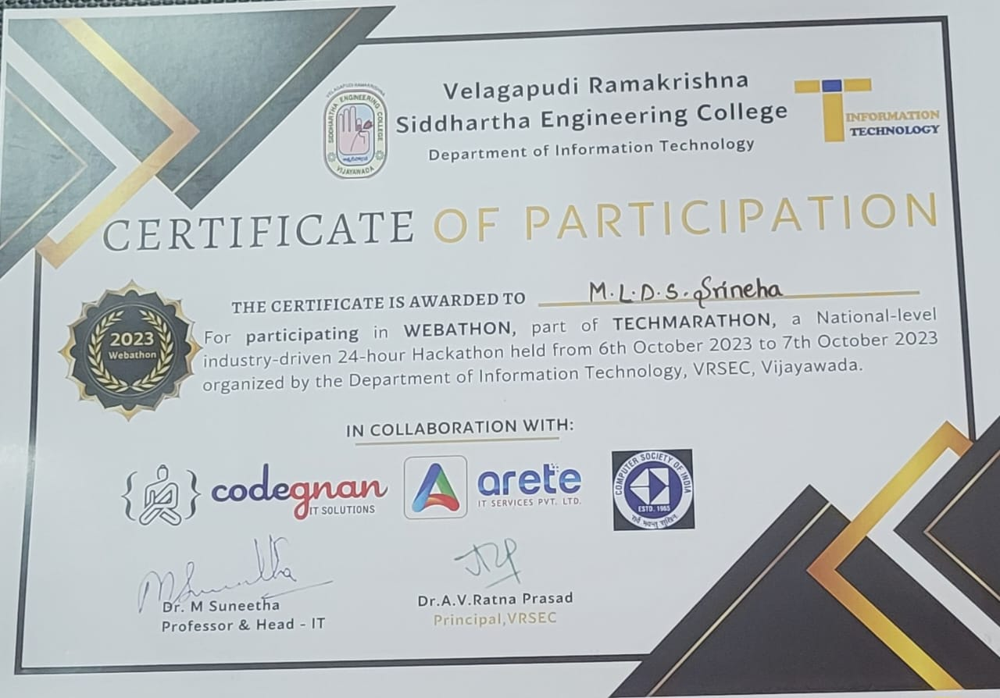
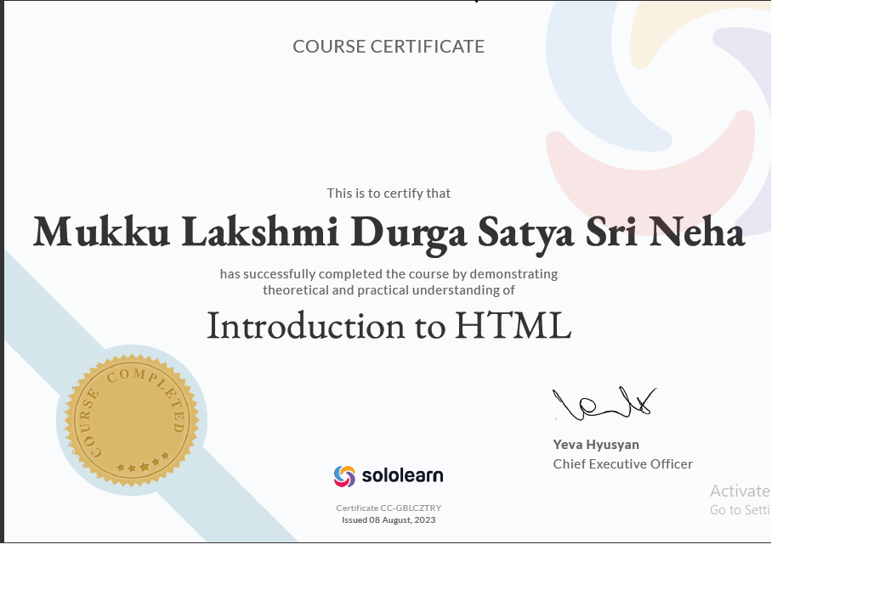

HELLO,
it's me Srineha Mukku
SOPHOMORE|SELF-ESTEEMED|INTROVERT
.jpeg)
SCHOOLING
SSSVN,All Bank Colony,RJY
2008-2020
.jpeg)
INTERMEDIATE
TRJC,Katheru,RJY
2020-2022
.jpeg)
GRADUATION(BTech)
SVECW,Bhimavaram
2022-present
|
I participated in a 24-hour webathon conducted by Velagapudi Ramakrishna Siddhartha Engineering College I embarked on my journey into full-stack development, and it was truly enlightening! Immensely thankful to my team members . Eager to further explore industrial-driven projects and keep expanding my skills in this ever-evolving field. Reflecting on an incredible 24-hour webathon experience at Velagapudi Ramakrishna Siddhartha Engineering College In just one day, we dove headfirst into the world of web development. The challenges were tough, the hours were long, but the learning was valuable. This journey has ignited a passion for web development in me, and I can't wait to continue exploring this exciting field.The experience taught me the importance of teamwork, time management, and the power of persistence. |
 |
|  | I have received the Jubilance Program certificate for completing a rigorous training program focused on leadership and teamwork skills. And also received a Limca Book of Records certificate for being part of the largest human image of a national flag. It was an honor to be part of these record-breaking achievements and I'm excited to apply the skills I learned to my future endeavors. I have received the Jubilance Program certificate for completing a rigorous training program focused on leadership and teamwork skills. And also received a Limca Book of Records certificate for being part of the largest human image of a national flag. It was an honor to be part of these record-breaking achievements and I'm excited to apply the skills I learned to my future endeavors. |
1. Technical skills: An individual can include their technical skills related to the job or industry they are applying for. For example, if they are applying for a web developer position, they can include their proficiency in HTML, JavaScript, CSS, and other programming languages.
2. Soft skills: Soft skills are non-technical skills that an individual possesses and can bring value to a job. Soft skills can include communication skills, problem-solving skills, organization skills, time management, and flexibility.
3. Photography: If an individual enjoys photography, they can add some of their best shots to their portfolio. This can showcase their creativity, eye for detail, and technical skills.
7. Drawing/Painting: If an individual enjoys drawing or painting, they can include their artwork in their portfolio. It can demonstrate their creativity, attention to detail, and patience.
5. Leadership skills and teamwork: If an individual has experience leading a team, they can add their leadership skills to their portfolio. Additionally, if they have experience working in teams, they can add their teamwork skills and collaborative abilities to their portfolio
6.Dancing: If an individual enjoys dancing and has experience in any dance form, they can highlight it in their portfolio. This can showcase their creativity, coordination, and dedication.